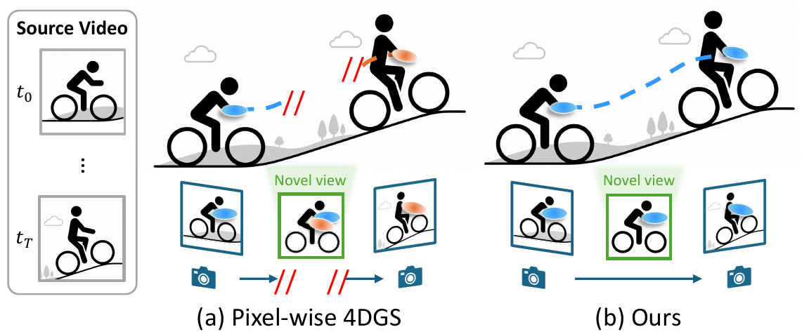
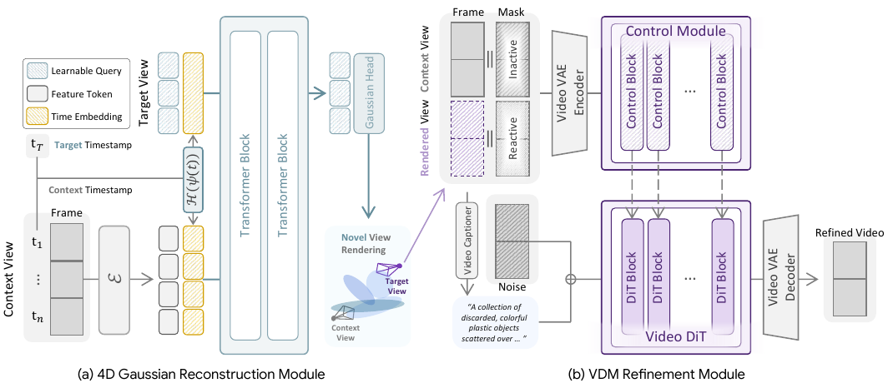

Existing feed-forward dynamic reconstruction methods predict pixel-wise 3D Gaussians for each frame, suffering from duplicated Gaussians and view-dependent biases that lead to ghost artifacts and occlusion issues. Our method replaces this design with learnable timestamp-conditioned queries that aggregate temporally and geometrically consistent evidence across the entire sequence. This compact bottleneck encourages globally coherent motion modeling and enables robust novel-view synthesis even under large temporal gaps.
To recover high-frequency details while preserving compactness, our framework further incorporates a diffusion-based rendering enhancement module. The same query-to-Gaussian aggregation is then reused for feature lifting, yielding a feed-forward 4D feature field that supports downstream tasks such as point tracking and dynamic scene understanding.

Our model first extracts timestamp-injected visual features, then uses learnable queries refined by transformer decoding to produce timestamp-conditioned Gaussians. Query tokens gather geometrically coherent signals across frames, and decoded Gaussian positions are modulated by the target timestamp for temporal interpolation. A diffusion-based refinement module improves rendering fidelity, and a feature decoder reuses attention patterns for 4D feature lifting.

@article{,
title={Learning Global Motion with Compact Gaussians for Feed-Forward 4D Reconstruction},
author={Kim, Mungyeom and Jeon, Minkyeong and An, Honggyu and Jung, Jaewoo and Ko, Hyunah and Han, Jisang and Yu, Hyeonseo and Shin, Donghwan and Hong, Sunghwan and Narihira, Takuya and Fukuda, Kazumi and Mitsufuji, Yuki and Kim, Seungryong},
journal={},
year={2026}
}